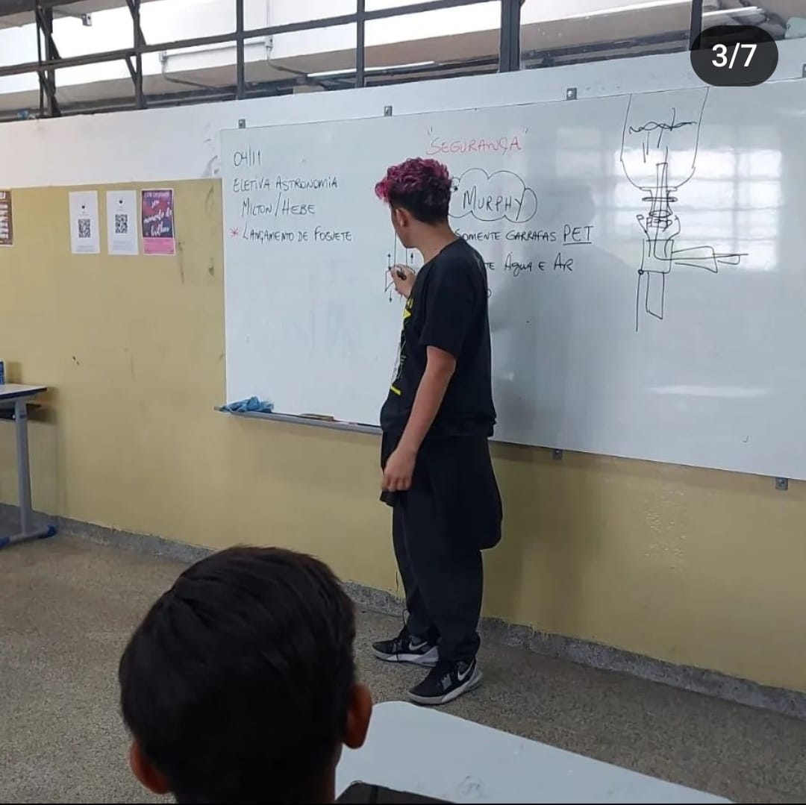
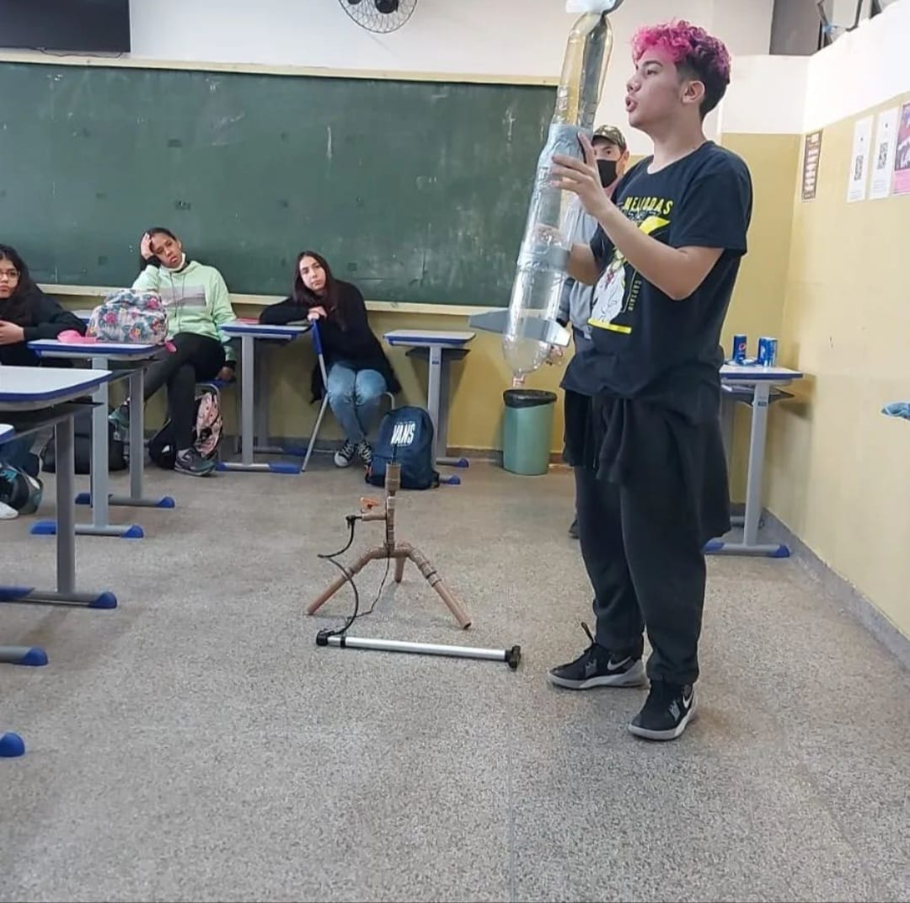
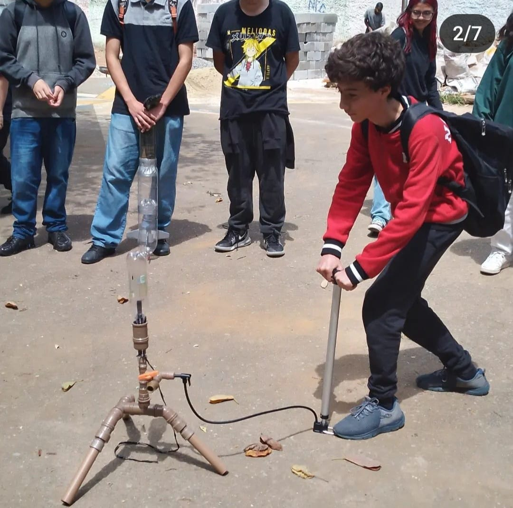

Faça parte dessa iniciativa! 1º CAMPEONATO DE LANÇAMENTO DE FOGUETES DE DIADEMA.
“UM TOQUE NAS ESTRELAS!”

CLUBE DE ASTRONOMIA ARTEMIS -1º CAMPEONATO DE LANÇAMENTO DE FOGUETES DE DIADEMA.
Projeto “Foguetes a Água em Diadema”

"O Clube de Astronomia Artemis, com o objetivo de preparar e incentivar os estudantes de nossa cidade, busca despertar o interesse pela Astronomia, Ciências e Geografia no Ensino Fundamental. Para isso, convidamos todas as escolas a participarem deste projeto inovador, que visa envolver as instituições de ensino e os professores no desenvolvimento de núcleos de oficinas de foguetes. Além disso, convidamos todos a participarem do Campeonato Municipal de Lançamento de Foguetes, previsto para o ano de 2025."
Introdução: No ambiente escolar, é evidente que estudantes do ensino fundamental e médio enfrentam dificuldades de compreensão nas disciplinas de Geociências. Essas dificuldades podem reduzir o interesse por componentes curriculares dessa área. Nesse contexto, será realizado um projeto com atividades práticas e oficinas para a confecção de foguetes utilizando garrafas PET. O projeto será desenvolvido em escolas municipais e estaduais de Diadema, envolvendo alunos do 8º e 9º anos do Ensino Fundamental. O objetivo principal é construir foguetes com garrafas PET e bases de lançamento, auxiliando na aprendizagem de conceitos de orientação geográfica, física e química, além de valorizar a ciência por meio de atividades experimentais.
Objetivos do Projeto:
• Orientar e acompanhar a construção de bases de lançamento e foguetes de garrafa PET;
• Relacionar a atividade de lançamento de foguetes com os componentes curriculares de Física e Química;
• Divulgar as práticas pedagógicas para a comunidade externa;
• Incentivar a participação dos estudantes do ensino médio na Olimpíada Brasileira de Astronomia e Astronáutica (OBA);
• Aproximar a ciência da vida cotidiana, ampliando o entendimento dos alunos sobre o mundo ao seu redor.
Metodologia:
A metodologia do projeto envolve a construção de foguetes artesanais com garrafas PET, utilizando como combustível uma mistura de vinagre e bicarbonato de sódio ou ar comprimido e água. O processo será conduzido em etapas, desde a seleção dos materiais até a montagem das bases de lançamento. Durante as atividades, os alunos terão a oportunidade de aplicar e observar conceitos físicos, como a terceira Lei de Newton, vetores, centro de gravidade e pressão, além de aprender sobre normas de segurança.
Resultados Esperados: Espera-se que o projeto contribua para a divulgação da ciência, tornando-a mais acessível e protagonista no ambiente educacional. Além disso, o projeto visa estimular o interesse dos estudantes pelas Ciências e geografia aplicada, proporcionando uma experiência prática e significativa que relaciona teoria e prática.
Construindo Foguetes na Escola: • Hipóteses: É possível construir um foguete experimental de baixo custo para o transporte de pequenas cargas úteis; os experimentos realizados podem ser recuperados e analisados posteriormente; as leis de Newton podem ser aplicadas no lançamento de foguetes.
• Objetivos Específicos: Introduzir conceitos de Astronáutica, explorar questões geográficas, físico-químicas e biológicas relacionadas à exploração espacial, construir protótipos de foguetes e relacionar conteúdos de sala de aula com situações práticas.
• Metodologia: O projeto será desenvolvido em grupos, com tarefas pré-determinadas realizadas na escola e testes em campo aberto. As atividades incluem a escolha dos materiais, construção da estrutura aerodinâmica do foguete, montagem da plataforma de lançamento e realização dos testes de voo. Considerações Finais: O projeto de construção de foguetes com garrafas PET nas escolas de Diadema é uma oportunidade única de aproximar os alunos da ciência, oferecendo uma experiência prática e interdisciplinar que estimula o interesse e o aprendizado em Física, Química e Matemática. Com a participação na OBA e na Jornada Brasileira de Foguetes, espera-se que os alunos desenvolvam habilidades científicas e um maior entendimento sobre os fenômenos que regem o mundo ao seu redor.
Nossas experiências com foguetes de garrafas PET em nossa escola: Nossa experiência: https://www.astronomianaescola.elementfx.com/trabalhos.html




Em Diadema, professores têm buscado mudar essa realidade ao unir teoria à prática para divulgar a ciência entre crianças e adolescentes por meio da construção e lançamento de foguetes de garrafa PET. Além de divertida e de baixo custo, a atividade possibilita que os alunos comprovem conceitos de física aplicada, química, geografia e matemática.
A construção de foguetes permite o trabalho multi e interdisciplinar, estimulando as relações interpessoais, a cooperação, a criatividade e as habilidades experimentais. Nosso intuito é fazer com que a construção de foguetes seja incentivada desde o Ensino Fundamental, seguindo os níveis definidos pela Olimpíada Brasileira de Astronomia e Aeronáutica (OBA). Nas fases iniciais, cujo público-alvo são crianças de 7 a 14 anos, essa prática serve como um estímulo lúdico para despertar o interesse pela ciência.
https://www.youtube.com/shorts/M4NDg32xbeg?feature=share
Propulsão Que os foguetes a água são movidos “a água”, isso está muito claro. Mas como é mesmo que isso funciona? Será que quanto mais água ele tiver mais alto ele subirá? Na verdade, não. Veja só:
Inércia A Lei da Inércia diz que “Qualquer corpo em movimento continuará se movendo e qualquer corpo parado permanecerá parado até que alguma força externa aja sobre ele”. Em outras palavras, inércia é a tendência que os objetos têm de resistir a mudanças no movimento. Ela tem a ver com a massa do objeto (a qual os não familiarizados com foguetes chamam de “peso”).
Uma garrafa mais cheia tem mais inércia, pois possui mais massa. Mais inércia quer dizer mais resistência a mudanças de direção. O vento precisa trabalhar mais para alterar o curso da garrafa.
As estrelas do ABCD vão brilhar mais forte! Participem da OBA – Olimpíada Brasileira de Astronomi A 28ª- 2025 edição da Olimpíada Brasileira de Astronomia e Astronáutica (OBA) , destinada a estudantes dos níveis fundamental e médio em todo o país, vem ai!
Preparação: Faça a sua inscrição para OBA/MOBFOG e venha aprender e se divertir com conosco!
O que é: Olimpíada Brasileira de Astronomia e Astronáutica (OBA) A Olimpíada Brasileira de Astronomia e Astronáutica (OBA) é uma espécie de recurso pedagógico, um instrumento que, muito mais do que premiar os melhores estudantes, atinge o louvável objetivo de cativar o interesse pelo estudo da ciência astronômica entre os jovens. Essa Olimpíada envolve Ciências, Física e Geografia e é constituída de apenas uma fase cuja prova é aplicada em quatro níveis.
Quem pode participar: Ensino Fundamental:
Nível 1: destinada aos alunos regularmente matriculados entre o 1º e 3º anos.
Nível 2: destinada aos alunos regularmente matriculados entre o 4º e 5º anos.
Nível 3: destinada aos alunos regularmente matriculados entre o 6º a 9º anos. Ensino Médio:
Nível 4: destinada aos alunos regularmente matriculados em qualquer série do Ensino Médio.
Objetivos Objetivos:
A OBA tem por objetivos fomentar o interesse dos jovens pela Astronomia e pela Astronáutica e ciências afins, promover a difusão dos conhecimentos básicos de uma forma lúdica e cooperativa, mobilizando num mutirão nacional, além dos próprios alunos, seus professores, coordenadores pedagógicos, diretores, pais e escolas, planetários, observatórios municipais e particulares, espaços, centros e museus de ciência, associações e clubes de Astronomia, astrônomos profissionais e amadores, e instituições voltadas às atividades aeroespaciais. Inscrição:
Os alunos interessados podem se inscrever no nosso Clube por meio do formulário indicado abaixo
O que estudar:
Leia no regulamento os conteúdos que serão cobrados no seu nível. "ARTEMIS" Os alunos inscritos no ABA ARTEMIS contarão com um planetário para melhor aproveitamento das aulas de reconhecimento do céu e orientação geográfica, auxílio de professores e colaboração de alunos que já foram medalhistas na OBA. Não fique fora dessa!
Este ano, Diadema terá uma novidade: o Clube de Astronomia Artemis da Escola PEI Antonieta Borges Alves abrirá inscrições para todos os estudantes interessados em ingressar no maravilhoso mundo da astronomia! Mesmo que sua escola não esteja inscrita, você pode participar da Olimpíada Brasileira de Astronomia. Basta entrar em contato conosco ou preencher o cadastro online para se inscrever. Novidades deste ano incluem a utilização de um planetário móvel para aplicar os ensinamentos relacionados às constelações e ao reconhecimento do céu. Também teremos a participação de professores e alunos que já participaram da OBA para fornecer dicas e acompanhamento via WhatsApp, além do apoio da UNIFESP Campus Diadema e do Shopping Praça da Moça.
No Shopping Praça da Moça, realizaremos observações astronômicas em seu terraço, proporcionando a oportunidade de descobrir os encantos do universo por meio de telescópios disponíveis aos alunos e interessados. Na praça da moça teremos lançamento de foguetes a água. A UNIFESP, por meio dos professores e alunos do departamento de física e matemática, disponibilizará salas para a realização da prova final e apoio aos estudantes durante o evento.
UM PLANETÁRIO EM DIADEMA. Para facilitar e incentivar o ensino e termos um recurso fundamento na área de astronomia, faremos apresentações e levaremos o planetário móvel ás escolas. O intuito é conseguir verbas para desenvolvermos um planetário fixo e disponibiliza-lo para as escola de nossa cidade!
01- Através de doações em forma de pagamento para sessões exclusivas para a sua escola.
02- Através da aquisição de quadros estampados com o mapa do céu de um dia e hora específico que tenha importância e significado para você. https://www.astronomianaescola.elementfx.com/adquirax.html Saiba mais sobre nosso projeto nas escolas e como você pode fazer parte: www.astronomianaescola.elementfx.com
Lembrando que as olimpíadas científicas também abrem portas para o ensino universitário. Por exemplo, algumas instituições de ensino superior estão disponibilizando vagas e bolsas para medalhistas olímpicos, como o Centro Universitário Facens, a Universidade Estadual de Campinas (Unicamp), a Universidade de São Paulo (USP), a Universidade Estadual Paulista (Unesp), a Universidade Federal de Itajubá (Unifei), o Instituto Federal do Sul de Minas Gerais e a Universidade Federal do Mato Grosso do Sul (UFMS), entre outras.
Organização:
A Olimpíada de Astronomia é realizada pela Sociedade Astronômica Brasileira (SAB), com o apoio da Agência Espacial Brasileira (AEB), do Conselho Nacional de Desenvolvimento Científico e Tecnológico (CNPq), dos deputados federais Tabata Amaral, Janones e Vitor Lippi, do senador Marcos Pontes, da UERJ, e é patrocinada pela Universidade Paulista (UNIP), pelo Centro Universitário Facens e pelo BTG Pacutal.
Tudo sobre a Olimpíada e o planetário em Diadema: https://www.astronomianaescola.elementfx.com/olimpiadas.html
Atenciosamente, Prof. Milton Pereira
Sobre o Professor Milton Pereira: https://www.astronomianaescola.elementfx.com/trabalhos.html
Clube de Astronomia Artemis/Escola PEI Antonieta Borges Alves.
Clube de Astronomia Artemis/Escola PEI Antonieta Borges Alves R. Araguaia, 365 - Conceição, Diadema - SP, 09990-290 - (11) 4056-6382